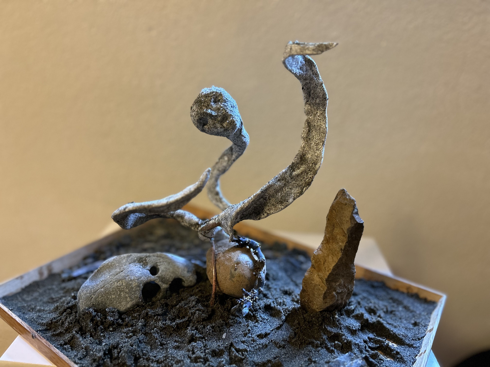
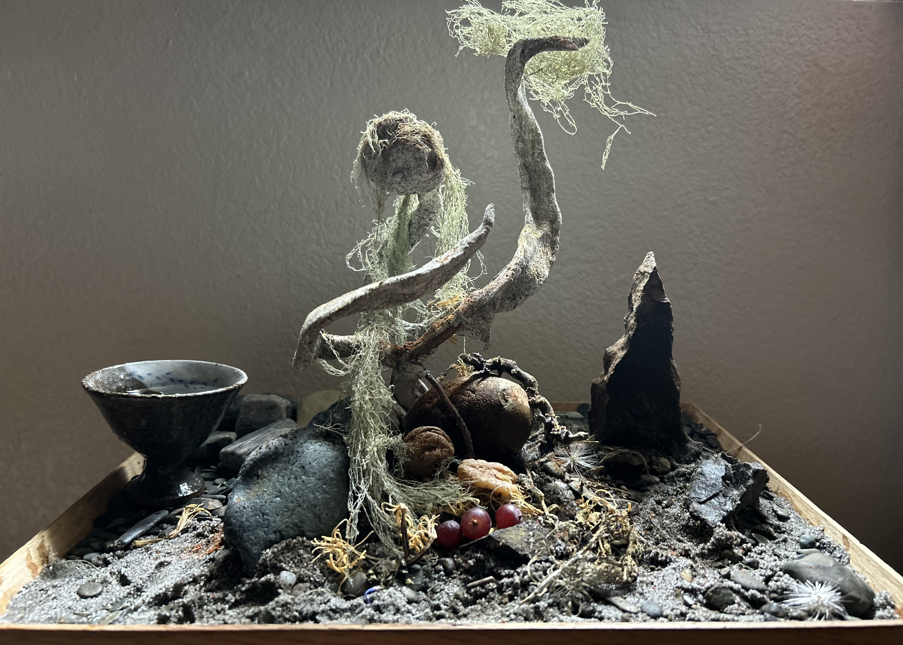
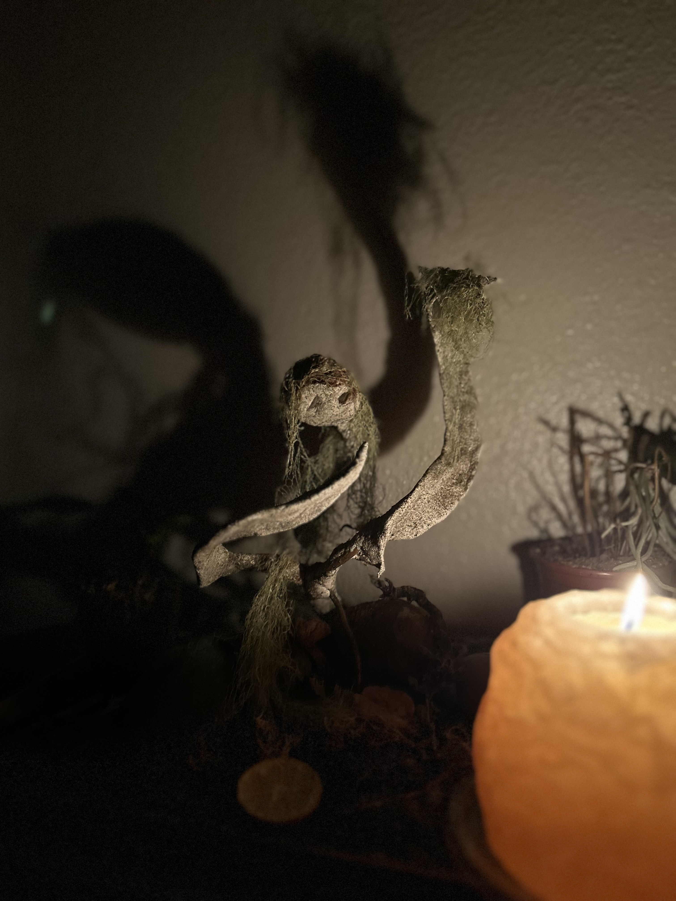

First planting
Those Who Danced
“And there were those who danced in the light of the second sun. Remember us.”Original line from a poem by Jacobo Hernández Durbin, written in Hiroshima, Japan, 1998



Paths
Repository paths
The shadow is part of the altar.
It arrives with flame.
The shadow does not match the form.